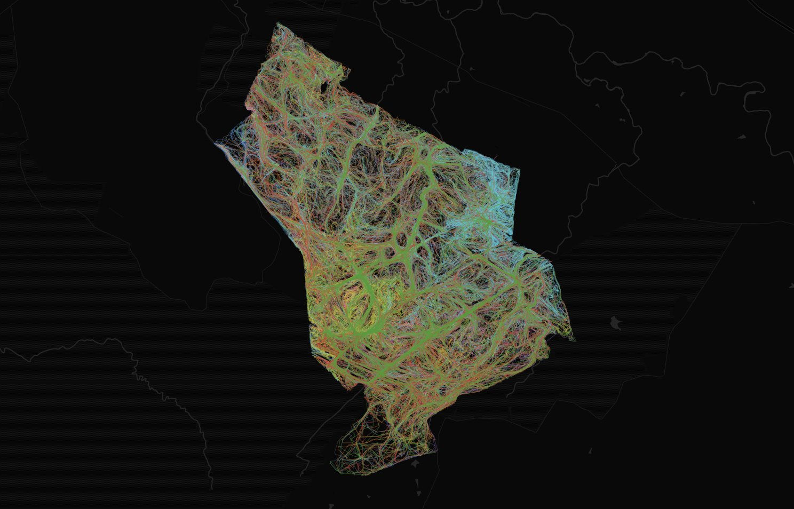

Elephant movement routes
GPS tracker data from a population of elephants, processed and mapped in Python with the Folium package. Each line is one individual's recorded track; where many tracks overlap, the brighter corridors emerge — showing the routes and core areas the herd relies on most.
Geoscripting · Python, Folium